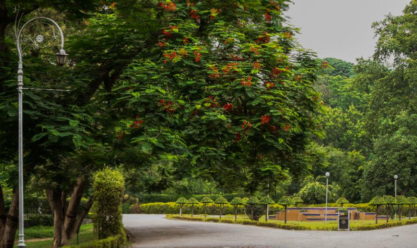
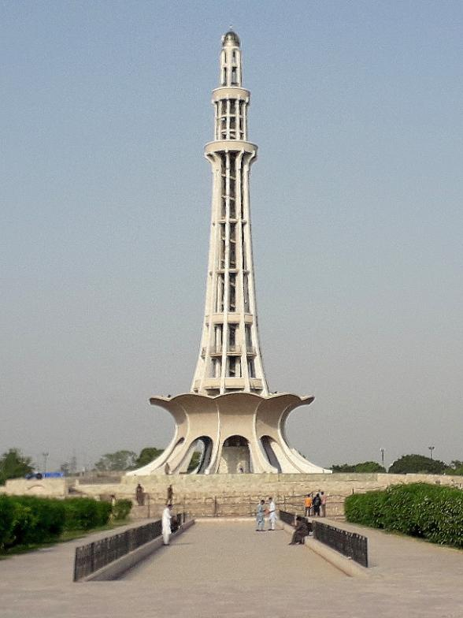

About Lahore
Lahore, the cultural heart of Pakistan, is renowned for its rich history, vibrant culture, and stunning architecture. The city boasts iconic landmarks such as the Lahore Fort, Badshahi Mosque, and Shalimar Gardens, which reflect its Mughal heritage. Lahore is also famous for its bustling bazaars, delicious cuisine, and lively festivals. Visitors can explore the Lahore Museum to learn about the city's history or enjoy a stroll through the colorful streets of the old city. With its blend of tradition and modernity, Lahore offers a unique and unforgettable experience for travelers.
Gallery





